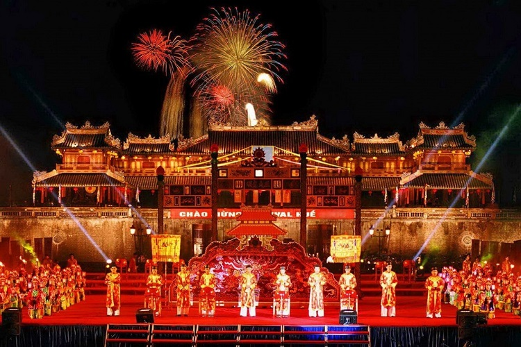
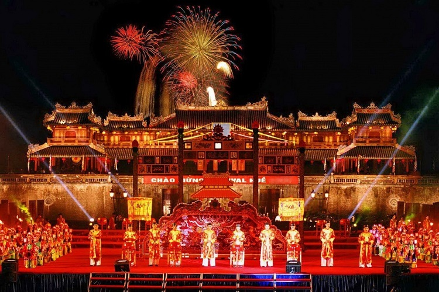
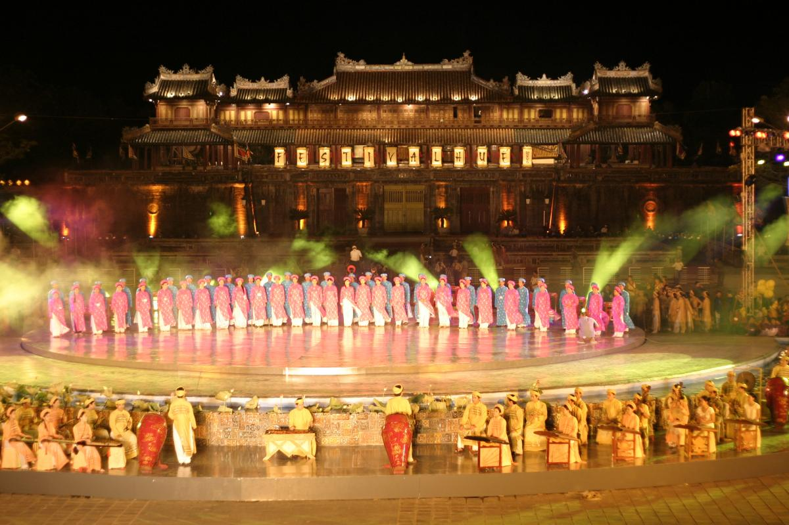
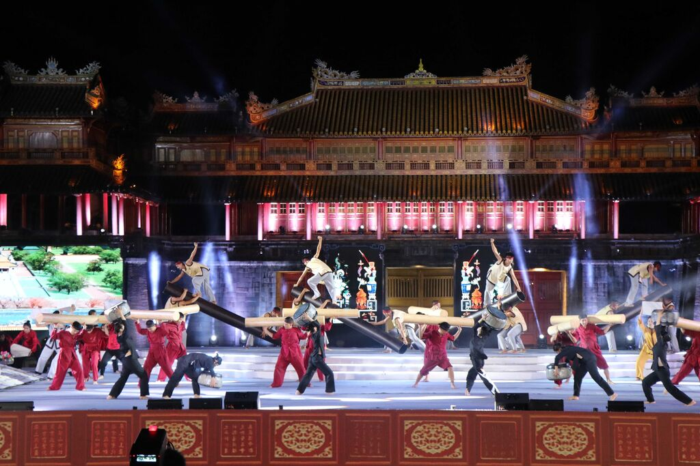
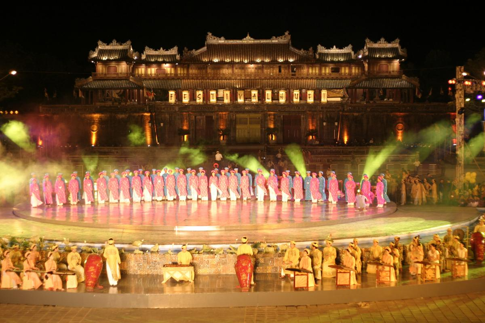
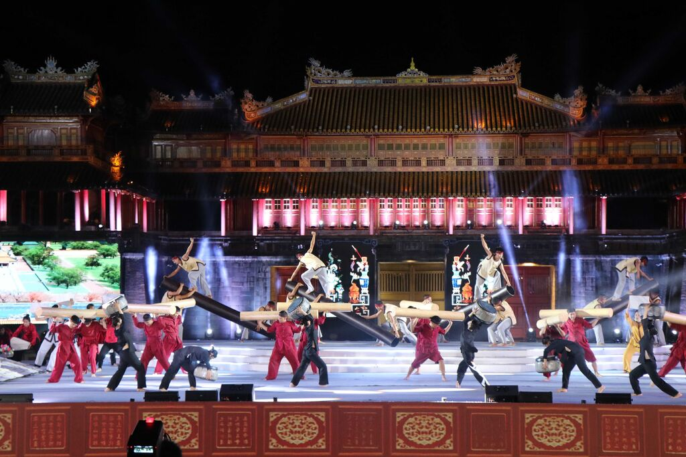

Nhã nhạc cung đình Huế – Di sản nghệ thuật quý báu của Cố đô
Biểu tượng âm nhạc cung đình Việt Nam
 

 



1. Lịch sử phát triển qua các triều đại
Thời Lý – Trần – Lê: Nhã nhạc có mặt từ thế kỷ XI, phát triển dần qua các thời kỳ với quy mô tổ chức rõ ràng. Đến triều Lê, thể loại này được hệ thống hóa thành các chương mục như Giao nhạc, Miếu nhạc, Đại yến nhạc...
Thời Nguyễn (1802–1945): Nhã nhạc đạt đến đỉnh cao. Triều đình Huế quy chuẩn hóa loại hình này về quy mô, bài bản, nhạc cụ và nghi thức. Đây là thời kỳ mà Nhã nhạc gắn bó mật thiết với đời sống cung đình, trở thành biểu tượng tinh thần của vương quyền.
2. Giá trị nghệ thuật và văn hóa
Âm nhạc thanh cao, điệu thức sang trọng thể hiện sự uy nghi của triều đình. Biểu diễn kết hợp âm nhạc, múa và trang phục truyền thống, tạo nên một loại hình nghệ thuật tổng thể. Góp phần khẳng định bản sắc văn hóa Việt Nam trước bạn bè quốc tế.
3. Nhã nhạc trong đời sống đương đại
Ngày nay, Nhã nhạc cung đình Huế được biểu diễn định kỳ tại:
Duyệt Thị Đường (Đại Nội Huế) – nhà hát cổ trong Hoàng thành, nơi xưa kia chỉ dành cho vua và hoàng thân quốc thích.
Trên sông Hương – du thuyền nghe Nhã nhạc là trải nghiệm độc đáo dành cho du khách.
Các dịp lễ lớn, Festival Huế, nghi lễ ngoại giao...
Các nghệ sĩ và Nhà hát Nghệ thuật truyền thống Cung đình Huế hiện vẫn bảo tồn hàng trăm bài bản quý giá như: Phẩm tuyết, Hồ Quảng, Lưu Thủy, Tây Mai, Xung Phong, Long Hổ… đồng thời đào tạo thế hệ nghệ nhân trẻ.
4. Thưởng thức Nhã nhạc – Một trải nghiệm không thể bỏ lỡ
Thời gian biểu diễn phổ biến:
Trên sông Hương: 18h – 20h hàng ngày
Duyệt Thị Đường: 10h và 15h
Giá vé tham khảo: 100.000 VNĐ/người
5. Kết luận
Nhã nhạc cung đình Huế là một kho tàng văn hóa sống động, là tinh hoa của nghệ thuật cổ truyền dân tộc, là niềm tự hào của người dân Huế và toàn thể dân tộc Việt Nam. Nếu có dịp đến Huế, hãy dành thời gian thưởng thức Nhã nhạc để cảm nhận sự thanh nhã, sâu lắng và cao quý trong từng âm thanh và vũ điệu – như chính vẻ đẹp của Cố đô bên dòng Hương Giang thơ mộng.
© 2025 Team CodeX. All Rights Reserved.